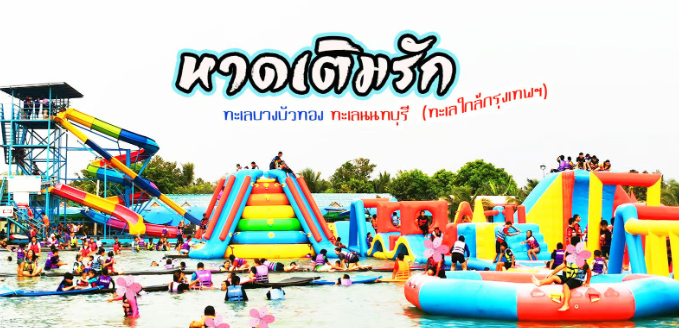
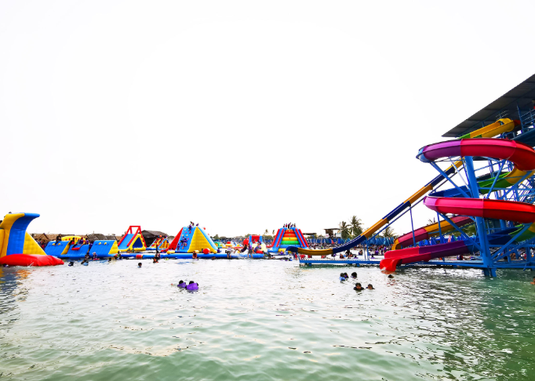
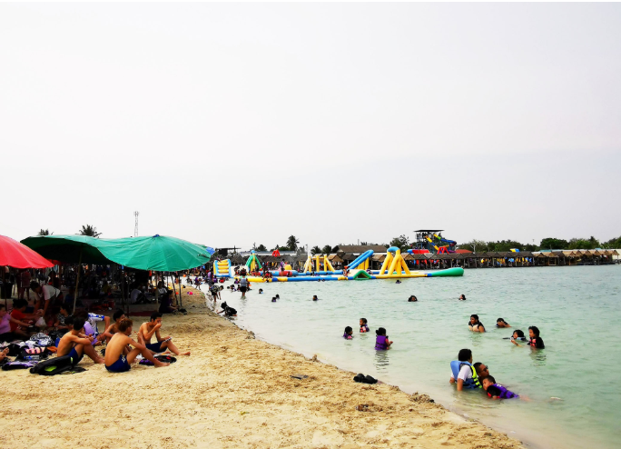
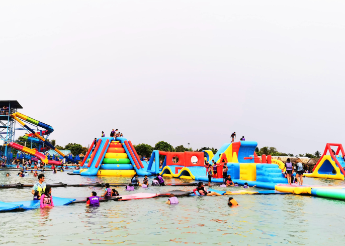
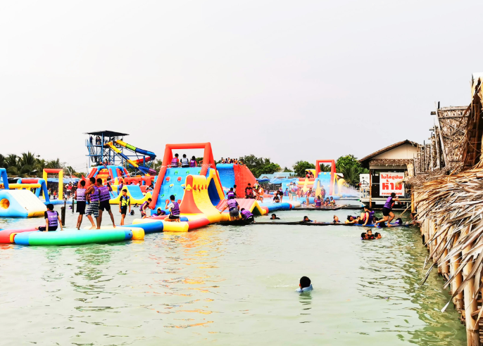
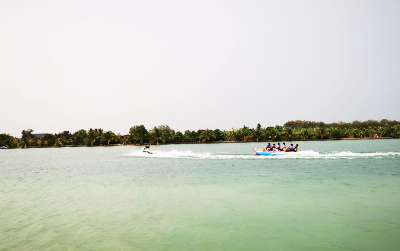
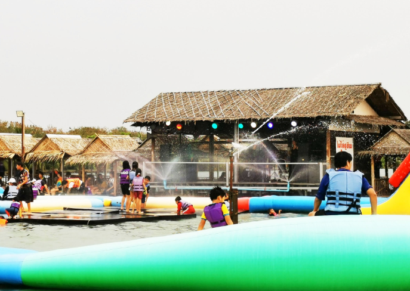
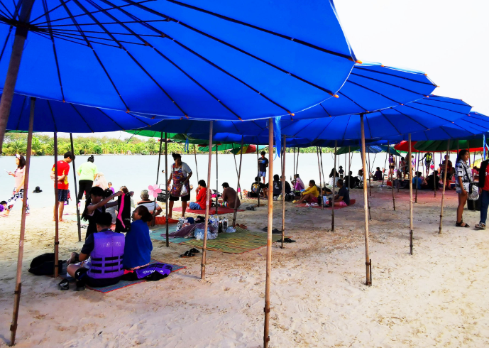
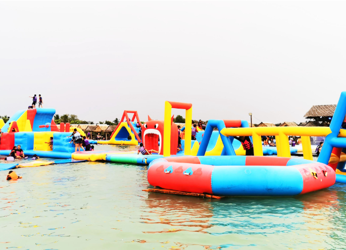

หาดเติมรัก

พิกัด เล่นน้ำคลายร้อนสงกรานต์ใกล้กรุงเทพฯ นั่นก็คือ หาดเติมรัก บางบัวทอง นนทบุรี เรียกได้ว่าที่นี่ เป็นทะเลน้ำจืดเลยก็ว่าได้ เพราะว่าที่นี่ถูกเนรมิตให้บรรยากาศเหมือนกับทะเล ไม่ว่าจะเป็นชายหาด ร่ม และเปล ให้ความรู้สึกเราเรากำลังไปเที่ยวทะเลที่ไหนสักที่ รวมถึงเครื่องเล่นทางน้ำก็มีเยอะแยะมากมาย


สระน้ำขนาดใหญ่ บนพื้นที่นับร้อยไร่ ถูกเนรมิตให้บรรยากาศคล้ายๆ ทะเล ทรายขาวๆ น้ำเย็นๆ สีเขียวใส และสีฟ้าของท้องฟ้า ยิ่งทำให้บรรยากาศให้ที่นี่คล้ายทะเลมากๆ เลยทีเดียว อีกทั้งที่นี่จะมีเครื่องเล่นทางน้ำเยอะแยะมากมายให้เลือกเล่น

หาดเติมรัก ตั้งอยู่ในพื้นที่ ตำบลบางคูรัด อำเภอบางบัวทอง นนทบุรี จากกรุงเทพฯ ใช้เวลาเดินทางชั่วโมงกว่าๆ ก็ถึงแล้ว นับว่าเป็นที่เที่ยวบรรยากาศทะเลใกล้กรุงเทพฯมากๆ หาดเติมรัก มีพื้นที่จอดรถให้บริการราคา 20 บาท หรือบริเวณใกล้ๆ ก็มีบริการจอดรถในราคา 40 บาท สามารถเลือกจอดได้ตามสะดวก

เมื่อเข้าไปข้างในให้เราไปจับจองที่นั่ง ซึ่งมีให้เลือกหลายแบบด้วยกัน ไม่ว่าจะเป็นแบบแพ ชั่วโมงละ 50 บาท แบบซุ้มในราคา 200 บาทต่อวัน แบบร่ม และเปลในราคา 120 บาทต่อวัน หรือจะเลือกเป็นแบบร่ม และเสื่อในราคา 60 บาทต่อวัน ชอบแบบไหนก็เลือกได้ตามสะดวกเลย ส่วนราคาของเสื้อชูชีพผู้ใหญ่ราคา 80 บาท ส่วนเด็กราคา 40 บาท



หาดเติมรัก มีร่มผ้าใบ เปล และซุ้มเต็มไปหมด บริเวณริมน้ำ เป็นหาดทราย และหิน จึงทำให้น้ำที่นี่ใส และเย็นมากๆ อีกทั้งที่นี่ยังมีซุ้มขายน้ำ ขายอาหาร มากมายหลายร้านด้วยกัน สามารถเลือกของอร่อยๆกินได้ตามชอบเลย รับรองว่าไม่มีอด บางครั้งก็จะมีพ่อค้าแม่ค้ามาเดินขายอาหารที่เต็นท์ บรรยากาศคล้ายทะเลมากๆ
